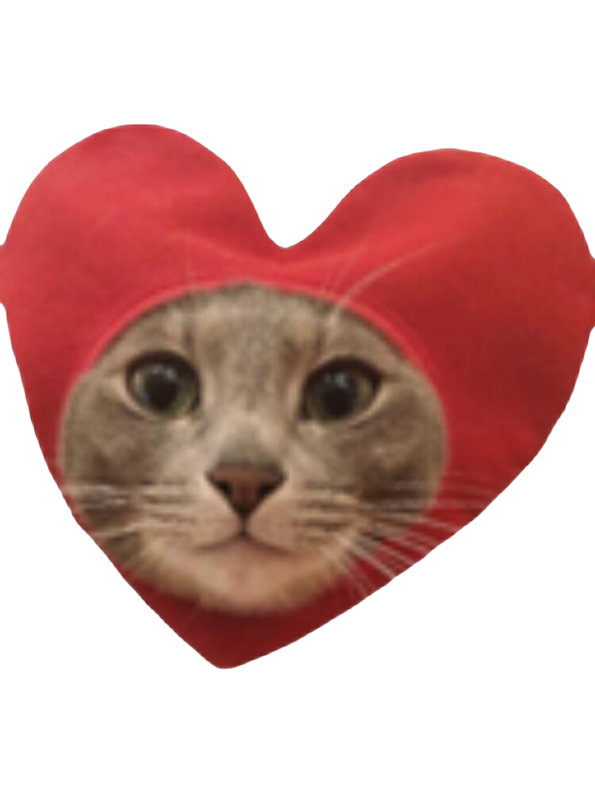
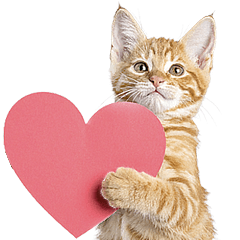
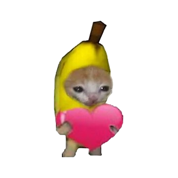
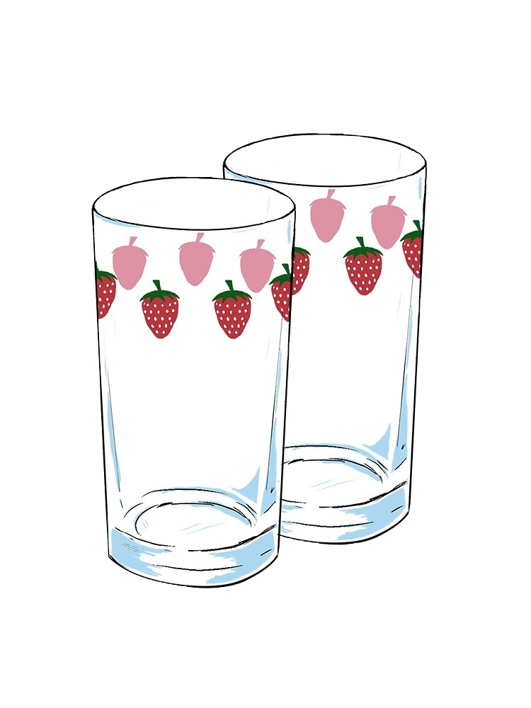
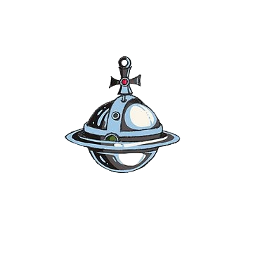

This is for you.
You mean much more to me with every year we are together.
I know I can't always be there for you, but perhaps this will be something you enjoy seeing
You have always been first and foremost someone I connect with on a truly personal level. Our personalities allign in a beautiful way. You always find a way to make me smile or laugh, as I do with you, and we get along so well. You are most definitely the person I can sync my mind with.
Inside and out, you are the most beautiful person I've had the pleasure of meeting. It was your initial personality that intrigued me from our anime account days XD, but after being able to see you in person, I realized that a truly beautiful personality like yours matches with the beautiful appearance you possess.
You've always been a patient and mature person (probably due to your being the oldest sibling :P), and I'm always impressed at how you're able to handle any obstacle or challenge that life throws at you. You also tackle new things that others may find difficult to dive into and honestly that's an area I take a lot of inspiration from.
Ahhhh I don't know, there's something about your smile that just infects me whenever I see it (in a good way of course). There such a good energy coming from it, uplifts me especially when I see you smiling in pictures that you send me. A really nice pick me up on especially tiring days.
You got a real nice badonadonk 😛 and a nice rack too 😈. Seriously though all parts of you are beautiful to me and that includes this much less important side of you in my opinion. You make an active effort to improve your body and care for it, which speaks volumes for what kind of person you are. It shows as a result >:P
Wow this is getting long 😥 That's what she said 😎. Anyway, the point is that there's so many facets and layers to you that it I would be sitting here for days talking about them. The best part of it all is getting to see different parts of you shine, as they remind me of the whole person behind it all.

Today, I reflect on my girlfriend, and I remember all the reasons I've fallen for you. I feel it, despite how hard days may get.
I get excited to talk to you. I've got so much luck in landing you. I will always choose you.


While today is a reminder of the good that loving brings, I'm grateful that every day I'm able to be a part of something this powerful.
Happy Valentine's Day. Here's to many more 😌💞
